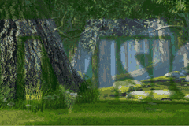
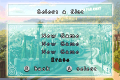

Shrek 2 - Beg for Mercy (USA, Europe)
EEPROM 4K gbakit Built-In 📺 Joybus 💾 MultiBoot
Cartridge Identity
- Game Code
BSIE(FamilyBSI)- Header Title
SHREK 2.1- Maker / Revision
52/ rev0- ROM Size
- 8.0 MiB (8,388,608 B)
- Save Media
EEPROM 4K- SHA-256
7fe009a208fbe46ca523f8c1e553ca015a61c51810d284fe81602cbe8cbee0fb- Engine / SDK Group
comm-005(81 families)
Screenshots


Link Cable & Multiplayer Communications
This title contains detected communication capabilities: 📺 Joybus 💾 MultiBoot.
Detailed protocol specifications, SIO registers, Joybus commands, and MultiBoot sequences are documented in the Link & Multiplayer Reference.
- GameCube Joybus
- RCNT mode literal
0x0000c304(mode0xC000) at offset0x02318c(RCNT literal at0x023188) - Single-Cart MultiBoot
- Single-Cartridge MultiBoot (Download Play) client/server handler · Thumb SWI 0x25 (
0xDF25):0x1dd370,0x1e8eb0,0x22bf78,0x295d22
Battery Save Support in gbakit
Built-in definition (BSIE)
gbakit save verify BSIE save.sav
gbakit save decode BSIE save.sav
gbakit save fix BSIE damaged.sav -o repaired.savROM Assets, Compression & Audio
- BIOS Compression
- LZ77 (
0x10): 100 streams · RLE (0x30): 0 streams - ROM Pointer Tables
- 15 tables (0 pointing to validated compressed streams)
- SDK Backup Tags
EEPROM_V124
Asset Map (formatkit.asset-map.v1)
Download BSIE-r0-7fe009a208fbe46c.asset-map.json.gz (230,049 B (224.7 KiB)) Verified PASS · 32.46% coverage
| Metric | Bytes / Value | Entries |
|---|---|---|
| Identified | 2,723,097 B (2.60 MiB) (32.46%) | 2,122 |
| Mapped | 0 B (0.00%) | 0 |
| Opaque | 0 B (0.00%) | 0 |
| Unknown | 5,665,511 B (5.40 MiB) (67.54%) | 1,815 |
| Total ROM Size | 8,388,608 B (8.00 MiB) | 3,937 |
| Coverage % | 32.46% | — |
| Entries w/ Code Refs | 2,180 / 3,937 (55.37%) | — |
Top Identified Formats: compress.bios-lz77 (100 · 1,426,426 B (1.36 MiB)) · audio.gax-sample (148 · 1,107,655 B (1.06 MiB)) · gfx.gba-palette (1,872 · 188,544 B (184.1 KiB)) · compress.bios-huffman (1 · 280 B) · gba.rom-header (1 · 192 B)
Largest unknown Extents (Headerless / Custom Asset Candidates)
| Offset | Size | Shannon Entropy | Code Refs |
|---|---|---|---|
0x006B2048 | 687,032 B (670.9 KiB) | 7.017 bits/B | 0 |
0x0077E798 | 530,536 B (518.1 KiB) | 0.419 bits/B | 0 |
0x0002AE24 | 393,136 B (383.9 KiB) | 3.875 bits/B | 0 |
0x00311700 | 191,264 B (186.8 KiB) | 7.305 bits/B | 0 |
0x002DC727 | 145,625 B (142.2 KiB) | 7.215 bits/B | 0 |
gzip -dk BSIE-r0-7fe009a208fbe46c.asset-map.json.gz && gbakit map verify rom.gba BSIE-r0-7fe009a208fbe46c.asset-map.json
gbakit assets export rom.gba --asset-map BSIE-r0-7fe009a208fbe46c.asset-map.json -o out/Text, Fonts & Scene Data
- Primary Text Encoding
- Plain ASCII (uncompressed) (
135ASCII strings) - Font & VWF Indicators
- VWF Width Table 1bpp Font · BIOS SWIs: BitUnPack
0x10:8· LZ770x11/12:8· Huffman0x13:4· RLE0x14/15:8 - Scene & Packaging
21ROM pointer tables (≥32 entries,6≥200) ·88relativeu32TOCs ·156OAM metasprite hits · FourCC:GAX2
Hardware MMIO Subsystems
ppu_display0x8021148,0x80238d8
Regional Variants & Revisions (Family BSI)
- Shrek 2 - Beg for Mercy (Europe) (Fr,De,Es,It) (
BSIX, 8 MiB)